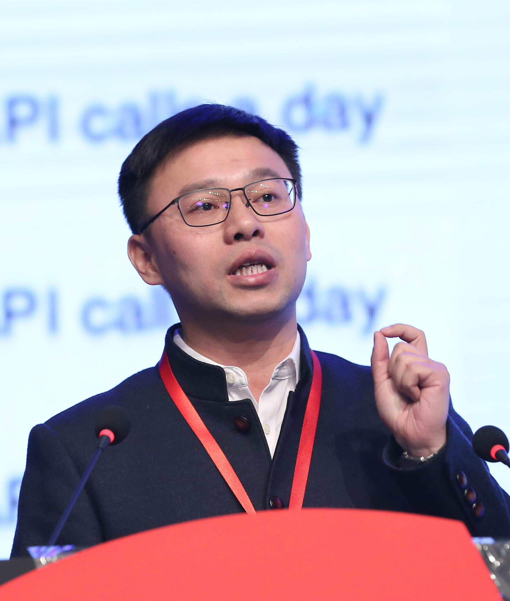

软件服务“异构集成”的语义互操作技术与应用
（待定）

何克清
虽然互联网实现了互联互通的连接，但是为了实现“互联网+”服务，从线下资源共享、到线上供需互动的服务分享，只有软件服务的互操作、才能创造1+1＞2的业务协作价值。信息化20多年来，“信息孤岛”始终没有真正消除。其根本原因是，形成“信息孤岛”的信息异构性、需求演化、使用情境变化等，导致简单的标准协议无法感知，阻碍了供需互动的互操作服务，跨界服务的“信息孤岛”则更加严重。传统的系统集成技术，往往是针对同构信息的。因此，突破软件服务“异构集成”技术瓶颈的松耦合互操作技术，成为了“互联网+”服务应用的下一个引爆点！
近15年来，武汉大学一直从事着需求制导异构软件服务的语义互操作方法与技术问题导向研究，及其应用推广。针对传统软件工程经典技术MDA的同构集成与协同在互联网时代所面临的变革，提出了软件服务工程中模型交互驱动的架构MiDA。定义了解决“异构集成”的MiDA “含意三角形(MT)”内核的三元组< RGPS需求元模型、互操作性治理元模型、及服务供给侧的构造元模型 >。给出了MT支撑供需互动的虚实交互与映射，及解决跨界协作服务的多MT迭代计算方法。阐述了MiDA内核中RGPS需求元模型制导的按需模型选择服务的灵活互操作方法，能支撑21种O-RGPS异构模型的语义互操作性治理元模型系列标准技术（ISO/IEC 19763-3/5/7/8/9，2015年已由ISO正式颁布执行、全球推广应用），以及供给侧按需服务聚合的O-RGPS构造元模型。MiDA技术已被国际IT业界权威的技术开放群组TOG采纳应用，确定为TOG云计算架构标准CCRA的基础技术。还介绍了在企业云管理软件服务平台设计中的应用实践，以及平台的规模产业化应用成效。
何克清，武汉大学首批二级教授、博导，日本北海道大学工学博士，软件工程国家重点实验室的创始人、长期担任软件工程国家重点实验室主任与学术带头人。现任武汉大学软件工程研究所所长，中国CITC·互操作性评测中心主任，武汉软件工程学会理事长，IEEE、ACM高级会员，CCF杰出会员、CCF杰出演讲者，ISO/IEC SC32中国代表，ISO/IEC 19763-3/5/7/8/9 标准系列研制的负责人，中国通信学会云计算专家委员会委员，香港中文大学深圳市富媒体大数据重点实验室学术委员会委员，金蝶软件（中国）有限公司国家工程技术研究中心学术委员会委员。IEEE Transactions on Service Computing国际期刊等的Associate Editor。
以第1完成人，获得国家“金牛奖”，国家科技进步二等奖，两次获ISO与IEC联合颁发的标准和标准系列研制“特别贡献”国际奖，省部级与CCF科技进步一等奖6项，2011年首届中国标准化杰出创新人物奖，科学中国人（2015）年度人物·杰出贡献奖，2015年武汉计算机软件工程学会“终身成就奖”，2016年第18届中国国际工业博览会高校展区“特等奖” 等20项奖励，知识产权33项。发表论文200多篇、出版专著4部。